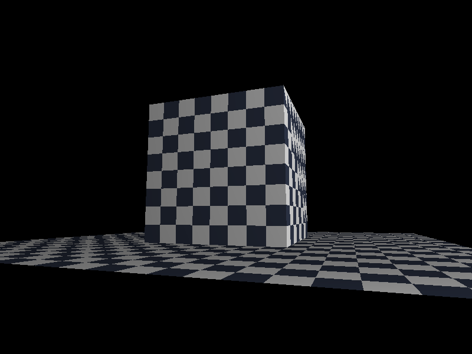
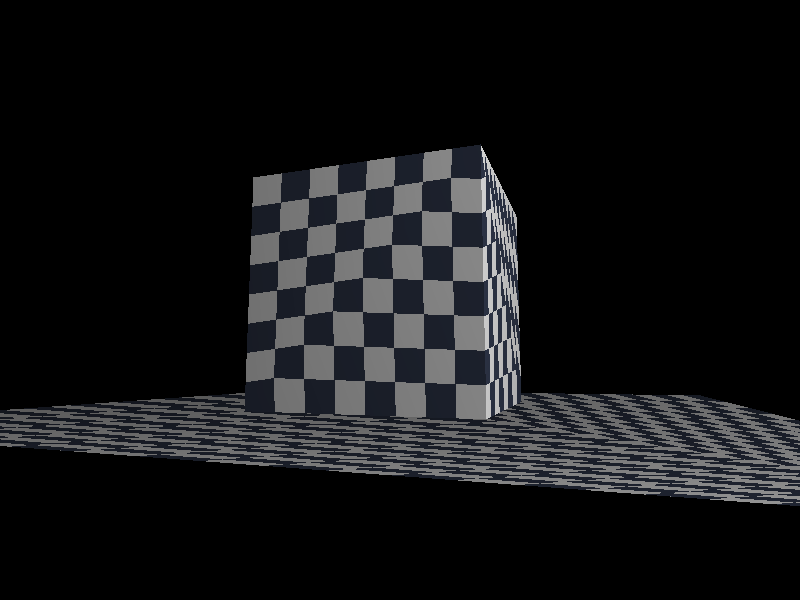
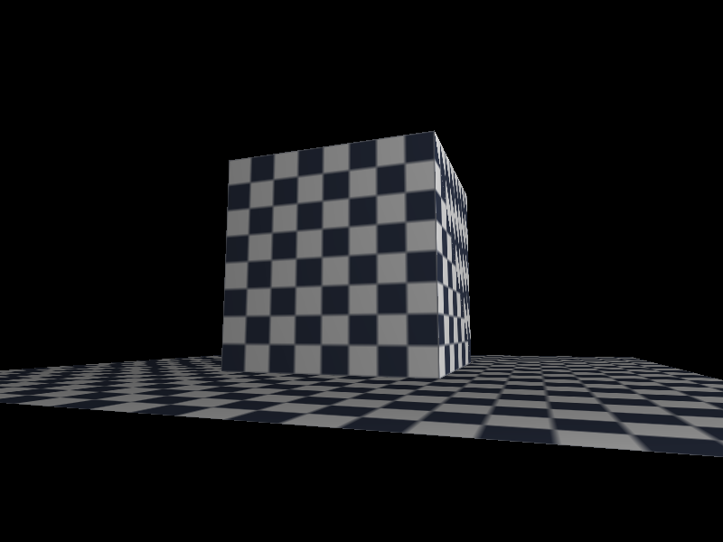

纹理与透视校正：贴图为什么会扭，怎么把它掰直
第 9 步给立方体上了「亮度」，第 10 步给它上「图案」。图案是上了，但一开始全是扭的 —— 这篇讲清楚为什么扭、怎么修。
每个新词第一次出现时先解释清楚，再用。插图全部是内联 SVG 手绘，不依赖任何库。
第三部分是全文核心：为什么贴图必须除以 w。那一节给了一个能算到底的数值例子，请务必自己拿笔算一遍那三步——算过和看过，是两回事。
01UV：顶点多了个「图上在哪」
1.1 顶点以前只有两样东西
到第 9 步为止，一个顶点上挂着两样信息：
- 位置（
position）：这个点在三维空间的哪里。 - 法线（
normal）：这个点朝哪边，用来算光照。
所以整颗立方体只有一个颜色（或者六个面六个颜色）。它没有「图案」。
1.2 图案从哪来：贴一张图上去
要给它图案，就得贴一张图。但三维的表面怎么知道「自己身上哪块该显示图上的哪块」？
答案：给每个顶点再加一样信息 —— 这个顶点，对应图上的哪个点。这个「图上的位置」就叫 UV（也叫纹理坐标）。它是一对小数字：
uv = (u, v) // 两个都在 0 到 1 之间规矩很简单：
| 值 | 在图上的位置 |
|---|---|
u = 0 / u = 1 | 图的最左边 / 最右边 |
v = 0 / v = 1 | 图的最上面 / 最下面 |
所以一张图的四个角，就是这四个 uv：
| 角 | uv |
|---|---|
| 左上角 | (0, 0) |
| 右上角 | (1, 0) |
| 左下角 | (0, 1) |
| 右下角 | (1, 1) |
1.3 为什么 v 是「向下」的？
因为这样最省事：v × 图的高度 直接就是行号，不用翻转。
图形学里另一套常见约定（OpenGL 用的）是「原点在左下角、v 向上」，那样取像素时得翻转一次。两套约定没有对错，关键是全项目统一。本项目在 texture.cpp 顶部把这条约定写死了。这是这类 bug 最典型的来源：两个模块用了不同的约定，图像上下颠倒。
1.4 uv 超出 0~1 会怎样：平铺
如果 uv 取 1.7、-1.5 这种超出 [0,1] 的值，图会不会出错？
不会 —— 会重复平铺（tiling），像瓷砖一样一块接一块地铺下去。这不是 bug，是特性。地板那种一眼望不到头的平面，就是靠一张小图铺满的。
[0,1] 就是重复平铺。中间那块是「一张贴图」（uv 从 0 到 1），周围的都是同一张图又铺了一遍。负数一侧也照样铺，靠 wrap 绕回。C++ 里的取模符号跟着被除数走：-1 % 64 得到的是 -1，不是 63。直接拿它当数组下标就是越界。
正确写法是 ((v % n) + n) % n：先加一个 n 把它掰回正数，再取模。就这一处细节，决定了 u = -1.5 的地板是正常铺开还是崩掉。
1.5 立方体的 uv 怎么给
最省事的给法：每个面都铺满一整张贴图——该面的四个角依次对应 (0,0) (1,0) (0,1) (1,1)。
同一张棋盘格贴到六个面上，转起来会发现：每个面的格子大小都不一样。这就是「近大远小」最直观的一次演示。
02采样：把 uv 变成颜色
2.1 从 uv 到像素下标
有了 uv，取颜色就是两步换算：
像素 x = u × 图宽
像素 y = v × 图高但算出来是小数（比如 x = 12.7），落在两个像素之间。怎么办？两种流派。
2.2 最近邻 vs 双线性
| 方式 | 做法 | 效果 | 代价 |
|---|---|---|---|
最近邻sample_nearest |
向下取整，取 x = 12 那个像素 |
放大后是马赛克一样的硬边 | 便宜 |
双线性sample_bilinear |
取周围 4 个像素，按距离加权平均 | 放大后是平滑过渡 | 贵一点（4 次取样 + 混合） |
学习路线的建议是：先写最近邻跑通，再升级双线性。本项目两种都实现了，用 B 键切换对比。
2.3 双线性里的一个坑：减半格
像素不是一个「点」，是一个 1×1 的小方格，它的坐标在中心。第 0 个像素的中心在 0.5，不是 0。
所以双线性插值前要先减 0.5 对齐：
const float fx = u * width - 0.5f;
const float fy = v * height - 0.5f;不减的话，整张贴图会往右下偏半格。在近处的、放得很大的格子上，这半格肉眼就能看出来。
03透视校正（本步核心）
3.1 问题：uv 不能直接线性插值
光栅化三角形时，我们在三角形内部用重心坐标插值各种属性。位置直接就是屏幕坐标，深度（NDC 的 z）在屏幕空间本来就是线性的，这两个都能直接插。
但是 uv 不行。
一句话说清根因屏幕上等长的一段，在世界里并不等长。
3.2 为什么不等长
把相机放在贴地的位置，看着一块地板向远处铺开。屏幕上从下往上走：
- 屏幕下方那一半（靠近你的那半屏），对应的其实是脚底下很近的一小块地。
- 屏幕上方那一半，对应的是远处非常大的一片地。
所以屏幕上的「正中间」并不对应世界里的「正中间」，它对应的是离你很近的位置。
z=2、远端 z=10。屏幕的正中间（橙色线）对应的世界位置是 t = 1/6，而世界的正中间（灰色虚线，t = 1/2）在屏幕上已经跑到了偏上的 1/6 处。两者完全不是同一个地方。3.3 一个能算到底的例子
设参数 t 是世界空间里的插值系数：t = 0 在近端，t = 1 在远端。近端深度 w₀ = 2，远端深度 w₁ = 10。
问：屏幕上这条线段的正中间那个像素（重心坐标 α = 0.5），对应的 t 是多少？
| 做法 | 算式 | 结果 |
|---|---|---|
| 直接线性插值 （错） |
t = α·t₀ + α·t₁ = 0.5 |
0.5 |
| 透视校正 （对） |
t = (α·t₀/w₀ + α·t₁/w₁) / (α/w₀ + α/w₁) = (0.5·0/2 + 0.5·1/10) / (0.5/2 + 0.5/10) = 0.05 / 0.30 |
0.1667 （就是 1/6） |
差 3 倍。用线性插值会以为「屏幕中点是世界的 1/2 处」，于是把 1/2 之后的纹理内容，硬生生摊到了远端的半个屏幕上 —— 这就是贴图被拉伸的全部原因。
把 w₀ = 2、w₁ = 10、α = 0.5 代进右边的式子，自己按一遍计算器。三个数字算错一个，整个理解就会跑偏。
3.4 正确做法
数学上可以证明（这里只给结论）：
1/w在屏幕空间是线性的 —— 可以直接插值。u/w、v/w也是线性的 —— 可以直接插值。- 但
u、v本身不是。
于是分两步走：
① 在屏幕空间线性插值 u/w、v/w、1/w ← 这三步合法
② 再除回来：u = interp(u/w) / interp(1/w)1/w 算出来存好；光栅化时插值的是「除以了 w 的量」；最后相除，才还原出这个像素真正对应的 uv。3.5 为什么偏偏是 1/w
因为透视除法本来就要除以 w：一个顶点在屏幕上的位置是 (x/w, y/w)。屏幕上等距分布的点，反过来推到相机空间，正好是按 1/w 分布的。
所以「屏幕空间线性的那个量」就是 1/w —— 它是屏幕空间和相机空间之间的那个桥梁。
3.6 代码
顶点阶段就把 1/w 算好存下来（不在光栅化里现算）：
sv[i].invw = 1.0f / clip.w; // 透视校正的关键：存 1/w，不存 w光栅化里：
if (perspective_correct) {
// 插值 1/w，以及 u/w、v/w —— 这三个在屏幕空间都是线性的
const float iw = a0 * v0.invw + a1 * v1.invw + a2 * v2.invw;
if (iw > 0.0f) {
const float uw = a0 * v0.u * v0.invw
+ a1 * v1.u * v1.invw
+ a2 * v2.u * v2.invw;
const float vw = a0 * v0.v * v0.invw
+ a1 * v1.v * v1.invw
+ a2 * v2.v * v2.invw;
u = uw / iw; // 除回来，才是这个像素真正对应的 UV
v = vw / iw;
}
} else {
// 对照实验用的错误做法：把 uv 当普通属性线性插值
u = a0 * v0.u + a1 * v1.u + a2 * v2.u;
v = a0 * v0.v + a1 * v1.v + a2 * v2.v;
}多出来的代价只有每像素两次乘加和一次除法。这就是全部。
每个顶点现在有 7 个字段（x y z invw u v light）。全塞进函数参数会有 20 多个参数，没法读也没法改，所以打包成一个 ScreenVertex 结构体。这是很常见的重构动机：参数一多就该打包。
04真实对照实验
学习路线里写得很清楚：
原文「第 10 步建议做个对照实验：先写不做透视校正的版本，截个图；再改成校正版本，对比一下。这个扭曲现象要亲眼看一次，否则以后在真实项目里遇到，你认不出来。」
程序里按 T 键切换透视校正，按 B 键切换采样方式。另外用一个临时程序把视角固定在扭曲最狠的贴地角度，两种各存一张图 —— 下面就是真实渲染结果，不是示意图：


怎么读这两张图：
- 左图：近处格子大、远处格子小，但每一格仍然是个正方形。这就是验收标准里的「近大远小、不扭曲」。
- 右图：本该是直线的格子边界弯成了弧线，远处的格子被拉得几乎糊成条纹 —— 因为远端的纹理被错误地摊到了更大的一块屏幕上。
两张图逐像素比较：有 31018 个像素不同，占 800×600 的 6.5%。肉眼一眼可辨，不是「差不多」。
双线性采样的版本（近处格子边缘更平滑）：

05贴图 × 光照
第 9 步算出来的「亮度」是一个 0~1 的数。贴图之后，最终颜色就是两者相乘：
最终颜色 = 贴图颜色 × 光照亮度所以第 9 步的 compute_lambert() 被拆开：新增一个只返回亮度（不带基色）的函数。
float lambert_intensity(const Vec3& normal, const Vec3& light_dir, float ambient)
{
const float diffuse = std::max(0.0f, dot(normal, light_dir));
return ambient + (1.0f - ambient) * diffuse; // 0~1 的亮度
}光栅化里乘上去：
Color modulate(const Color& c, float light) // 逐通道 min(255, 值 × light)
...
fb.put_pixel(x, y, modulate(texel, light));
fb.set_depth(x, y, z);light 是 0~1 的标量，跟随 uv 一起做透视校正的影响非常小，所以这里是直接线性插值的。
深度同理 —— NDC 的 z 在屏幕空间本来就是线性的。位置就更不用插了，屏幕坐标就是它自己。只有 uv 需要校正，因为只有它「在世界空间里线性，在屏幕空间非线性」。
06踩坑：没有裁剪会怎样
这一条不属于「纹理」，但它是这一步最重要的一次踩坑，而且它解释了第 11 步为什么必须存在。
6.1 现象
第一版把地板铺成 12×12，结果整张图全黑，只剩清屏色。立方体也不见了。
6.2 根因：还没有做裁剪
项目还没有做裁剪（那是第 11 步）。渲染器里对 w 太小的顶点直接丢弃：
if (clip.w < 1e-6f) {
// w 太小（顶点贴在相机平面上甚至背后），透视除法会炸，直接丢掉
visible[i] = false;
continue;
}而三角形只要有一个顶点的 visible == false，整个三角形就被跳过：
if (!visible[a] || !visible[b] || !visible[c]) continue;地板铺到 12×12 时，角点 (6, -1, 6) 相对相机已经跑到相机背后了 → 包含这个角的两个三角形全被丢掉 → 什么都不画 → 黑屏。
6.3 定量约束
要让地板永远完整，必须保证地板离原点最远的角，比相机到原点的距离更近：
√(半边长x² + 半边长z² + 1²) < 相机到原点的距离 r这就是「为什么这一步的地板不敢铺大」的真正原因。
y = -1（贡献 1），最终是 4.36 < 5 ✓。相机要能压到「贴地」角度（扭曲最狠的视角），但俯角不能低到钻到地板下面去：pitch 的下界要满足 r · sin(pitch) > -1（地板高度）。r = 5 时下界取 -7.5°，此时相机高度约 -0.65，还在地板之上。
把这条约束记住：不做裁剪，你连一块正常大小的地板都铺不出来。做完第 11 步的裁剪，地板就能铺到任意大，相机贴脸时也不会再有三角形飞出去。
07全流程串联
08自测题与产出物
自测题（点开对照）
- UV 的
v在本项目里是向上还是向下？为什么这么定？ - UV 取
1.7会发生什么？靠哪个函数保证不越界？ - 为什么
wrap_index里要写((v % n) + n) % n，直接v % n会出什么问题？ - 为什么 UV 不能像深度那样直接线性插值？用一句话说清楚。
1/w在屏幕空间是线性的，u是不是？- 双线性采样为什么要把坐标减
0.5？ - 地板铺大了为什么会整张图黑屏？这和哪一步有关？
- 为什么
light不需要做透视校正，而 uv 需要？
- 透视校正对照图（本文第四部分那两张真实截图）—— 作品集里最有说服力的一页：「我知道为什么贴图会扭曲，也知道怎么修」
core/texture模块 —— 一个独立、可复用的纹理模块- 棋盘格立方体 + 地板 Demo —— 渲染管线里第一个「看起来是真三维场景」的画面
「为什么贴图必须除以 w？」是渲染岗和 TA 岗的高频考点。本步的两张对照图 + 那个 t = 1/6 的数值例子，就是最好的回答素材：先讲现象，再讲根因，最后给公式。